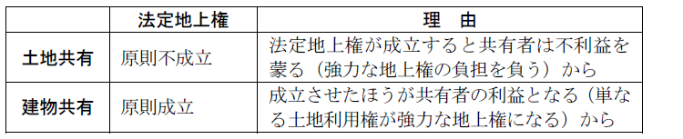

第３編 担保物権
第２章 抵当権
第３節 抵当権の効力
Ⅳ 用益権との関係
1. 意義
土地と建物が同一の所有者に属する場合に、そのいずれかに抵当権が設定され、その実行により、土地又は建物の所有者が別人となったときは、土地所有者である抵当権設定者は、その際に地上権を設定したものとみなす制度である（388条）。
本条は強行規定であるから、法定地上権の成立を認めないという趣旨の特約は効力を有しない（大判明41.５.11）。
2. 趣旨
民法上、土地と建物は別個の不動産とされるので、両者は独立して抵当権の目的となり得る。そのため、両者の一方に抵当権が設定されて、実行により所有者を異にすることが容易に生じ得る。しかし、現行民法では、自己借地権の設定は認められていない。そこで、抵当権の実行によって土地と建物が別人の所有に属した場合、土地利用権を有さない建物が出現するおそれがある。しかし、このような場合に建物を収去しなければならないとするのは社会経済上不利益であるし、当事者の合理的意思にも反する。そこで、このような不利益を回避するため法定地上権の制度を定めた。
3. 成立要件
① 抵当権設定当時、土地上に建物が存在すること
② 抵当権設定当時、土地と建物が同一人所有であること
③ 土地・建物の一方又は双方に抵当権が設定されたこと
④ 土地・建物の所有者が抵当権の実行により異にするに至ったこと
(1) 抵当権設定当時、土地上に建物が存在すること（要件①）
(a) 更地に抵当権設定後、建物を建てた場合、法定地上権は成立しない（大判大４.７.１）。
(b) 更地に抵当権設定後、建物が建築され、その後土地につき２番抵当権が設定され、後者により競売申立てがなされた場合に法定地上権は成立しない（大判昭11.12.15）。
(c) 更地に抵当権を設定するに際し、土地抵当権者の建物建築の承認があった場合でも法定地上権は成立しない（最判昭47.11.２）。
(d) 建物の再築と法定地上権
ⅰ 抵当権設定当時建物が存在し、その後滅失して建物が再築された場合、旧建物を基準とした法定地上権が成立する（大判昭10.８.10・通説）。
ⅱ 同一所有者に属する土地と建物に共同抵当が設定された後、当該建物が取り壊され、建物が新築された場合、新建物の所有者が土地の所有者と同一で、かつ、新建物が築造された時点での土地抵当権者が新建物について土地の抵当権と同順位の共同抵当権の設定を受けたなどの特段の事情のない限り、新建物のために法定地上権は成立しない（最判平９.２.14）。
(e) 建物登記の必要性
ⅰ 建物は抵当権設定当時実際に存在していれば足り、保存登記がなされていなくとも法定地上権の成立を妨げない（大判昭14.12.19）。
ⅱ 抵当権設定当時、実体上、土地・建物が同一人所有であれば、登記記録上は別人の所有とされていても法定地上権は成立する（建物が前主名義の場合につき最判昭48.９.18、土地が前主名義の場合につき最判昭53.９.29）。
→ 抵当権設定にあたっては登記だけでなく現地調査をするのが一般であり、建物が実在すれば、建物の存在を考慮して、担保価値を評価するからである。
(2) 抵当権設定当時、土地と建物が同一人所有であること（要件②）
(a) 抵当権設定当時、既に別人所有である場合
この場合にはその建物のために利用権が設定されているはずであるから、法定地上権を認める必要はない。
(b) 設定時は同一人所有であったが、競売時には別人所有となった場合
この場合にも法定地上権は成立する（大連判大12.12.14）。
（理由）
① 土地抵当の時、土地が譲渡された場合、譲受人は利用権の負担を覚悟すべきであるし、建物が譲渡された場合でも抵当権者は法定地上権の成立を予定して担保価値を評価していたはずである。
② 逆に、建物抵当の時には、法定地上権が伴うものとして、担保価値を評価しているはずであるから、否定すると建物抵当権者に不利益をもたらす。
(c) 設定時は別人所有であったが、競売時は同一人所有となった場合に法定地上権が成立するか。
ⅰ 建物抵当の場合
①原則＝否定
建物抵当権の効力が約定借地権に及び、これが混同の例外として存続する（179条１項ただし書参照）。
借地人が借地上の建物に抵当権を設定した後、その建物が地主に譲渡され、土地建物が同一人に帰属しても、法定地上権は成立しない（最判昭44.２.14）。
②例外＝肯定
建物への１番抵当権設定当時には、別人所有であったが、２番抵当権設定当時には同一人所有になっていた場合（大判昭14.７.26）
建物抵当権であるから法定地上権が成立しても１番抵当権者は害されない。そこで、建物収去による社会経済的不利益の回避という388条の趣旨を尊重し法定地上権を成立させてよい。
ⅱ 土地抵当の場合
→ 否定説
法定地上権は成立せず、従来の利用権が存続する。
（理由）
建物抵当の場合とは利益状況が異なる。すなわち、抵当権者は法定地上権が成立しないことを前提に土地の担保価値を評価したはずであり、その後に法定地上権の成立を認めることは抵当権者の予期に反し、著しい不利益をもたらす。
※ このことは、土地への１番抵当設定後、２番抵当権設定時には同一人所有となっていた場合でも異ならない（最判平２.１.22）。
なぜなら、成立を肯定すれば、法定地上権の不成立を前提に担保価値を高く評価した１番抵当権者を害するからである。
なお、競売前に１番抵当権が消滅していた場合には２番抵当権を基準に法定地上権が成立する（最判平19.7.6）。
(d) 共有と同一人所有の要件との関係
判断基準は、「他の共有者にとって利益となるか、不利益となるか？」である。

ⅰ 土地が共有されている場合
①土地持分権に抵当権が設定された場合
→ 法定地上権不成立（最判昭29.12.23、最判平６.12.20）
法定地上権の成否は他の共有者のみならず、競落人らの第三者の利害に影響する為、登記記録等で客観的･明確に外部に公示されない土地共有者間の人的関係によって決せられるべきではないからである。
② 建物に抵当権が設定された場合
→ 法定地上権不成立（通説）
なお、他の土地持分権者が法定地上権の成立を容認していた場合に、法定地上権の成立を認めた判例がある（最判昭44.11.４）。
ⅱ 建物が共有されている場合
①土地に抵当権が設定された場合
→ 法定地上権成立（最判昭46.12.21）
②建物共有持分権に抵当権が設定された場合
→ 法定地上権成立（通説）
(3) 土地・建物の一方又は双方に抵当権が設定されたこと（要件③）
388条は「土地又は建物につき」と規定されているが、土地・建物の両方に抵当権が設定された場合であってもよいとされている（最判昭37.９.４）。
(4) 土地・建物の所有者が抵当権の実行により異にするに至ったこと（要件④）
抵当権の実行とは、任意競売（抵当権に基づく担保不動産競売）だけでなく、強制競売や公売処分の場合も含まれる。
4. 一般債権者の差押えによる法定地上権成立
(1) 意義
土地及びその上にある建物が債務者の所有に属する場合において、その土地又は建物の差押えがあり、その売却により所有者を異にするに至ったときは、その建物について、地上権が設定されたものとみなす（民事執行法81条前段）。この場合の地代は、当事者の請求により、裁判所が定める（民事執行法81条後段）。
(2) 仮差押後の競売と法定地上権
地上建物に仮差押えがされ、その後、当該仮差押えが本執行に移行してされた強制競売手続における売却により買受人がその所有権を取得した場合において、土地及び地上建物が当該仮差押えの時点で同一の所有者に属していたときは、その後に土地が第三者に譲渡された結果、当該強制競売手続における差押えの時点では土地及び地上建物が同一の所有者に属していなかったとしても、法定地上権が成立する（最判平28.12.1）。
（理由）
法定地上権の趣旨は、土地と地上建物が同一人所有に属する場合には、土地の使用権を設定することができず、強制競売によって土地と地上建物の所有者が別人となったときに法定地上権を成立させることにより、地上建物の除去という社会経済的損失を防止するものである。
仮差押えの時点で土地と地上建物が同一人所有に属していた場合も、土地の使用権を設定することはできず、その後に土地を第三者に譲渡したとしても地上建物について土地の使用権を設定するとは限らない。この場合に当該仮差押えが本執行に移行してされた強制競売手続により買受人が取得した地上建物につき法定地上権を成立させることは、法定地上権の趣旨に沿うものである。
5. 内容と対抗要件
(1) 法定地上権の及ぶ範囲
法定地上権の及ぶ範囲は、建物の敷地のみならず、建物の利用に必要な土地を含む（大判大９.５.５）。
(2) 存続期間・地代
存続期間も地代も、当事者の協議によって定めることができる。
存続期間は、抵当権設定当時の建物の状態等を考慮して決定する必要がある（268条２項）。合意がなければ、借地借家法３条が適用され、「30年」となる。
地代について当事者の協議が整わない時は、裁判所が決定する（388条後段）。
(3) 対抗要件
法定地上権も第三者に対しては対抗要件を必要とする（地上権の登記、又は借地借家法10条による建物の登記）。
6. 一括競売（389条）
更地に抵当権を設定した後に建築された建物のためには法定地上権（388条）は成立しないから、本来ならば、抵当権者は建物の存在を無視して、更地として競売することができる。しかし、建物が現に存在するのに土地だけを競売することは困難であるし、建物収去を強制することは社会経済的に不利益となる。そこで、土地抵当権者に一括競売権を与えた（389条１項本文）。
この一括競売は、抵当権設定後に建物を築造した者が、抵当権設定者であるか否かを問わずに認められる。
ただし、抵当権者が不当に利益を得ることは避ける必要があるので、土地の競売価格だけから優先弁済を受けるとした（389条１項ただし書）。
もっとも、本条は抵当権者に一括競売を義務づけるものではないから、抵当権者は一括競売せずに土地だけを競売することもできる（大判大15.２.５）。